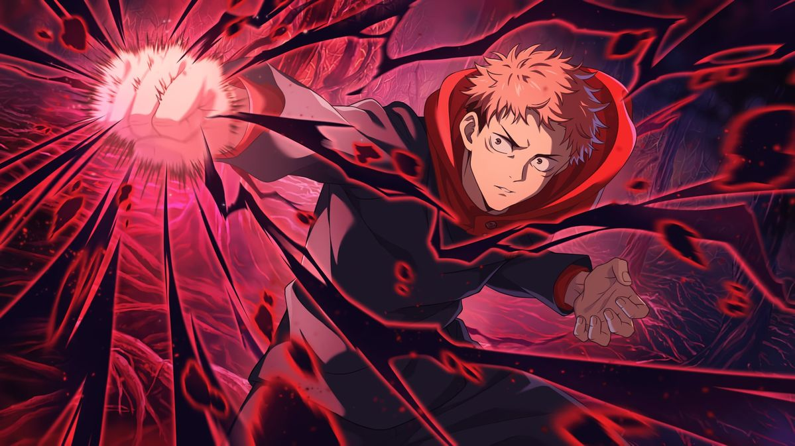

О аниме
«Магическая битва» — это история о Юджи Итадори, который случайно становится сосудом для короля проклятий — Рёмен Сукуны. Его ждут битвы, магия и сильнейшие враги.

Главные персонажи
- Юджи Итадори — сосуд Сукуны.
- Мегуми Фушигуро — техник шикигами.
- Нобара Кугисаки — техника молотка и гвоздей.
- Годжо Сатору — сильнейший маг современности.

Способности
Каждый персонаж обладает уникальной техникой:
- ⚡ Черная вспышка
- 🌀 Бесконечность (Годжо)
- 🐺 Шикигами (Мегуми)
- 🔨 Техника резонанса (Нобара)